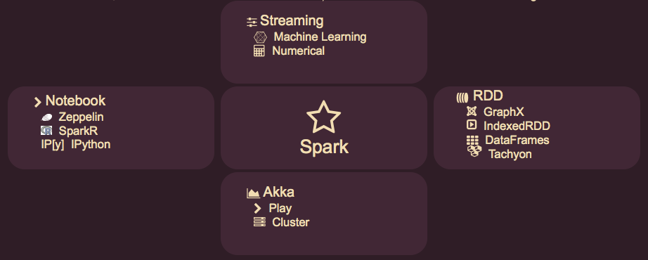

Bio:
I have been a Chief Architect for 20 years, where he first become enamored by Scala in 2006.
Over the years I have written a symbolic math application in Scala at Glaxo in 2008 for molecular dynamics
and in 2010 I formed the Front Range Polyglot Panel and participated as its Scala expert.
Abstract
- Scala has gained a lot of traction recently,
- especially in Data Science with Apache Spark.
- So what are Scala's success factors for Data Science?
So Let's First Ask Data What It Likes:
| Data Likes | Scala Feature |
|---|
| Being a First Class Citizen | Primitives As Classes |
| To Assert its Identity | Strong Typing |
| To Stay Intact | Immutability |
| Resilient Packaging | Transparent Monads |
| Nice Interogations | Message Pattern Matching |
| To Share its Contents | Case Classes |
Second Lets Look at What Scientists Like
| Scientists Like | Scala Feature |
|---|
| To Alter Reality | Transformations in Streams |
| To Simulate Things All at Once | Concurrency |
| Tools At Their Finger Tips | Zeppelin Spark Workbook |
| A Language For Specific Tasks | Scala DSLs |
| To Let Data Drive Results | Transform Pattern Matching |
| A Simple Language For Everything | A Multi-Paradigm Language OUCH |
Outline
- Introduction
- History
- Class Declarations
- Functions
- Propagating State Evenly
- For Comprehensions
- Scala Classes and Types
- Scala Class Hierarchy
- Data as First Class Citizen
- Asserting Identity with Types
- Staying Intact - Immutability
- Monads
- Monads for Resilient Packaging
- What Is a Monad Anyway?
- Understanding Monads
- Monads in Data Science
- Pattern Matching and Case Classes
- OO Encapsulation Sucks
- Sharing Data with Case Classes
- Pattern Matching
- Message Interogation
- Apache Spark
- Altering Reality with Data Transforms
- Spark Streaming
- RDD Resilient Distributed Data
- Monads in Streaming
- Streaming Code Constructs
- Simulating Things All at Once
- Spark Standalone
- Tools at Your Finger Tips
- A Symbolic Math DSL
- A Simple Language For Specific Tasks
- Math Expression Class
- Math Case Classes
- Derivatives with Pattern Matching
- Typesetting Math with Pattern Matching
- A Multi-Paradigm Language
- Reactive Manifesto
- Data Driven Results
- Scala's Paradigms for Data Science
- Scala's Code Constructs by Feature
- References
History - Maritn Odersky
- 1980s PhD Student with Nickolas Wirth work on Modula-2 and Oberon
- 1900-95 Functional Programming
- 1995-98 Pizza Teamed with Philip Walder on Pizza
- 1998-99 GJ - Java Generics
- 2000-02 Funnel Combined functional and object-oriented programming
- 2001 Design began
- 2003 First internal use for "Functional and Logic Programming Course” at EPF
- 2004 First Release
- 2006 Scala 2.0
- 2007 Scala 2.3-2.7
- 2007: Lift web framework launched.
- 2008: First Scala liftoff unconference (50 particants) – TwittergoespublicwithScala,hypestarts
- 2009: More Scala liftoffs.
- 2010-14: Scala Days
- 2010 EPFL 180 participants
- 2011 Stanford 280
- 2012 London 400
- 2013 New York 500 Scala Workshop Montellier
- 2014 Berlin 800 Scala Symposium Uppsala
Class Declarations
trait Trait[T]{...}
abstract class Abs[T]( i:Int ) extends Trait[T]{...}
class Concrete[T]( i:Int ) extends Abs[T]( i:Int) {...}
case class Case[T]( i:Int ) extends Abs[T]( i:Int) {...}
class Mixin[T]( i:Int ) extends Abs[T]( i:Int)
with Trait1[T] with Trait2[T] {...}
Functions
// Functional declarations are strongly typed
func1:(Int,Int) => Int // Two Int args. returns Int
func2:(String) => Unit // String arg and returns nothing
Class Hierarchy

Class Hierarchys
Any
AnyVal // Scala's base class for Java primitives and unit
Double Float Long Int Short Char Byte Boolean Unit
AnyRef // java.lang.Object
String // java.lang.String
(all other Java Classes ...)
(all other Scala Classes ...)
Iterable // base Class for all Scala collections
Seq // base Class for all ordered collections
Array // compiles to Java arrays []
List // Immutable list for pattern matching
scala.Null // is a subtype of all AnyRef classes
scala.Nothing // is a subtype of all Any classes•
Traits - Thick and Thin
- Traits are similar to interfaces in Java
- As with interfaces a Scala class can mix in any number of traits.
- The mixin class can be assigned to or passed as any if its trait types.
- Traits can not be constructed so traits do not have primary constructors.
- Traits with purely abstract methods map directly to Java interfaces.
- Unlike Java interfaces, Scala traits have concrete implementations of methods.
- The Thick and Thin Approach to Trait Design - Highest Reuse
- First define a small number of abstract methods - the Thin part.
- Then implement a large number of concrete methods - the Thick part.
- All concrete members implemented in terms of the abstract members.
Traits - Thick and Thin
trait Ordered[A] // Parameterized with type [A]
{
// The Thin abstract part. Must implemented in base class
def compare( a:A ) : Int
// The Thick part. Concrete methods declared with operators.
// All based on the abstract method compare(a)
def < ( a:A ) : Boolean = compare(a) < 0
def > ( a:A ) : Boolean = compare(a) > 0
def <= ( a:A ) : Boolean = compare(a) <= 0
def >= ( a:A ) : Boolean = compare(a) >= 0
}
Data as First Class Citizen
Asserting Identity with Types
Staying Intact - Immutability
Monads for Resilient Packaging
Pattern Matching and Case Classes
OO Encapsulation Sucks
- But the Fix is Easy
- The Rest of OO Has Value
Sharing Data with Case Classes
// Scala expands the case class Add( u:Exp, v:Exp ) to:
class Add( val u:Exp, val v:Exp ) // Values immutable
{
def toString : String = {..} // Class and field name
def equals : Boolean = {..} // Fields compared structurally
def hashCode : Int = {..} // hashCode from fields
}
// Scala creates a companion object with apply and unapply
object Add
{
def apply( u:Exp, v:Exp ) : Add = new Add(u,v)
def unapply( u:Exp, v:Exp ) : Option[(Exp,Exp)] = Some(u,v)
}
Apache Spark
Traditional View

- Core: Distributed task dispatching, scheduling, and basic I/O
- GraphX: A distributed graph topology for RDDs based on Pregel for Page Rank
- SQL: SchemaRDD a DSL feeding semi? structured data into RDDs
- Streaming: Ingests data in mini-batches for RDD transforms & streaming analytics
- MLlib : Machine Learning Pipeline - Spark's original purpose

- RDD: Resilient Distributed Datasets logically partitioned across servers
- GraphX: Distributed graph topology for RDDs based on Pregel (Page Rank)
- DataFrames: A distributed collection of data organized into named columns
- Databases: Local File System(Standalone) Cassandra MongoDB HDFS JDBC ...
- Streaming: Ingests data in mini-batches for RDD transforms and streaming
- Machine: MLlib Machine Learning Pipeline
- Numerical: Breeze Epic Puck GPU(cuBlas-NVidia) and NetLib-Fortran
- Notebook: A Spark aware notebook in Typesafe's web framework Play
- IPython: The Data Scientist's favorite notebook with PySpark
- SparkR: A light-weight frontend to use Apache Spark from R
- Spark Core: Distributed task dispatching, scheduling, and basic I/O
- Akka: Concurrent, distributed, resilient, message driven, actor based
- Cluster: Standalone, Mesos, Myriad and YARN
Altering Reality with Data Transforms
RDD Resilient Distributed Data
Streaming Code Constructs
Simulating Things All at Once
Tools at Your Finger Tips
A Simple Language For Specific Tasks
Math Expression Class
sealed abstract class Exp extends with Calculate with Differentiate
{
// Wrap i:Int and d:Double to Num(d) & String to Var(s)
implicit def int2Exp( i:Int ) : Exp = Num(i.toDouble)
implicit def dbl2Exp( d:Double ) : Exp = Num(d)
implicit def str2Exp( s:String ) : Exp = Var(s)
// Infix operators from high to low using Scala precedence
def ~^ ( v:Exp ) : Exp = Pow(this,v) // ~^ high precedence
def / ( v:Exp ) : Exp = Div(this,v)
def * ( v:Exp ) : Exp = Mul(this,v)
def - ( v:Exp ) : Exp = Sub(this,v)
def + ( v:Exp ) : Exp = Add(this,v)
// Prefix operator for negation
def unary_- : Exp = Neg(this)
}
Math Case Classes
case class Num( n:double ) extends Exp // wrap double
case class Var( s:String ) extends Exp // wrap String
case class Par( u:Exp ) extends Exp // parentheses
case class Neg( u:Exp ) extends Exp // -u prefix
case class Pow( u:Exp, v:Exp ) extends Exp // u ^ v infix
case class Mul( u:Exp, v:Exp ) extends Exp // u * v infix
case class Div( u:Exp, v:Exp ) extends Exp // u / v infix
case class Add( u:Exp, v:Exp ) extends Exp // u + v infix
case class Sub( u:Exp, v:Exp ) extends Exp // u – v infix
case class Dif( u:Exp ) extends Exp // Differentiate
Derivatives with Pattern Matching
trait Differentiate
{
this:Exp => // Makes Differentiate aware of Exp for Internal DSL
def d( e:Exp ) : Exp = e match
{
case Num(n) => 0 // diff of constant zero
case Var(s) => Dif(Var(s)) // "x" becomes dx
case Par(u) => Par(d(u))
case Neg(u) => -d(u)
case Pow(u,v) => v * u~^(v-1) * d(u)
case Mul(u,v) => v * d(u) + u * d(v)
case Div(u,v) => Par( v*d(u) - u*d(v) ) / v~^2
case Add(u,v) => d(u) + d(v)
case Sub(u,v) => d(u) - d(v)
case Dif(u) => mathML( t, "mi", "d" ); u.mathML(t)
}
}
Typesetting Math with Pattern Matching
trait MathML
{
self:Exp =>
def mathML( t:Text ) { mathML(t,this) }
def mathML( t:Text, exp:Exp )
{
exp match
{
case Num(n) => mathML( t, "mn", n.toString )
case Var(s) => mathML( t, "mi", s ) // Syms.entity(t,s)
case Par(u) => mathML( t, "mfence", u )
case Neg(u) => mathML( t, "mo", "-" ); u.mathML(t)
case Pow(u,v) => mathML( t, "msup", u, v )
case Mul(u,v) => mathML( t, "mrow", u, "*", v )
case Div(u,v) => mathML( t, "mfrac", u, v )
case Add(u,v) => mathML( t, "mrow", u, "+", v )
case Sub(u,v) => mathML( t, "mrow", u, "-", v )
case Dif(u) => Dif(d(u)) // 2rd dif
}
}
}
A Multi-Paradigm Language
The Reactive Manifesto
www.reactivemanifesto.org/

- Responsive: In Memory Always respond meaningfully in a timely manner
- Elastic: Cluster Stay responsive under varying workload
- Resilient: RDD Stay responsive in the face of failure
- Message Driven:Streaming Wrap and stream messages asynchronously
Responsive
Always respond meaningfully in a timely manner
- "In Memory" improves performance by 1-2 orders of magnitude
- Formulate meaningful response metrics for Data Science
- Leveage statistics to shrink sample populations
- Weigh benefits between real time and near time
- Keep your common sense
- Don't let brute force do your thinking for you
Elastic
Stay responsive under varying workload
- Elasticity is the key value proposition for cloud hosting
- Leveage Spark's integration with Akka Mesos Myraid and YARN
- Always have spare resources available to spin up for peak demand
- Spend the extra money to replicate data
Resilient
Stay responsive in the face of failure
- Clustered servers and network links fail all the time
- Spark Core monitors and responds to cluster failure
- RDDs "Resilient" Distributed Datasets says it all
- RDDs shard the data over a cluster
- RDDs reconstitute shards lost due to node / link failures
- RDDs in Spark can rerun their transforms to recreate lost data
Message Driven
Wrap and stream messages asynchronously
Message Streams facilitate Data Science with these benefits
| Message Feature | Data Science Benefit |
|---|
| Asynchronous | The system knows more about concurrency than humans |
| Error Delegation | Errors become first class citizens that are treated properly |
| Location Transparency | Processes are not locked into specific server configuations |
| Publish & Subscribe | Allows roles to be defined from a Data Science perspective |
| Component Isolation | Allows components to focus on their assigned tasks |
| Loose Coupling | Precise instead of accidental interactions |
| Back Pressure | Message streams can be throttled to relieve resources |
| Functional | A programing paradigm well suited for data processing |
Scala's Paradigms for Data Science
Scala Code Constructs by Feature
| Scala Feature | Code Construct(s) |
|---|
| Primitives As Classes | Class Hierarchy |
| Strong Typing | Type Specification |
| Immutability | val |
| Transparent Monads | For Comprehension |
| Case Classes | unapply() |
| Pattern Matching in General | Taking a Derivative |
| Transformations in Streams | Spark Stream |
| Concurrency | Parallelized Collections |
| Zeppelin Spark Workbook | Command Line |
| Scala DSLs | Symbolic Math Classes |
| Pattern Matching for DSLs | Taking a Derivative |
| Multi-Paradigms OUCH | Single Paradigm Contexts |